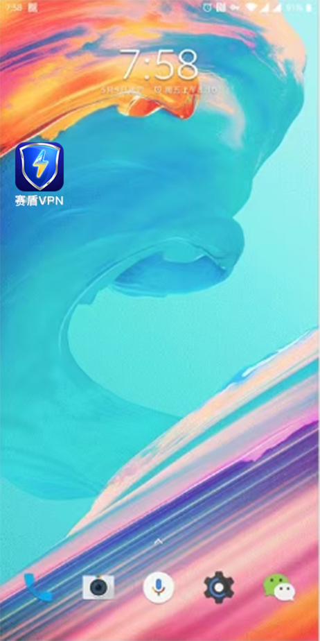

返回
欢迎查看常见问题
智慧服务，让您使用更简单

关闭一加手机电池优化让赛盾 VPN 稳定运行
OnePlus 的电池优化会让终止赛盾VPN 的运行这样让您使用起来断断续续的，请按照这里的介绍调整手机设置
OnePlus 手机为了加强您的电池续航，提供了电池优化的能力，但是这样会导致赛盾VPN 被系统强行杀死。这会导致您使用起来感觉非常不稳定，或者觉得速度变得非常慢。
您放心，只需要简单的设定 赛盾VPN 不让系统进行电池优化就能很快解决这个问题。这里我们针对-加手机自己的 H2OS 9和H2OS5进行具体操作介绍。若您不是这两个型号的 OnePlus Ul版本，您可以参考一下下面的内容，设定是类似的。
若您是其他品牌的手机，请您参考《每隔几分钟就不好用了，赛盾 VPN 太不稳定了?》文章的说明。其中也介绍了为什么“杀后台”会影响您的使用。
锁定“赛盾 VPN”APP

上图的操作步骤是:
1.从屏幕底部向上滑动调出多任务管理界面:
2.找到“赛盾VPN”后点击右上角的三个点的设定菜单;
3.点击其中的“锁定”项目，您会在界面中看到个锁头标记，这说明已经设定好了
上面介绍的是 H20S9的操作方式，针对H2OS5 您只需要在多任务管理界面中直接点击锁头标记即可。
关闭电池优化选项
上图的操作步骤是:
1.进入手机的设置 App，然后选择“电池”分类;
2.在其中进入“电池优化”项目，然后找到“赛盾 VPN”;
3.点击“赛盾 VPN”后，在对话框中选择“不优化”
若您使用的是 H2OS5 版本，您需要在“应用权限”中找到“赛盾 VPN”进行这个设定。
为了能让您享受更好的体验，再进行最后的设置就可以拉!
1.进入手机的设置,找到赛盾 VPN;
2.找到“耗电行为控制”，开启“允许唤醒前台”“允许完全后台行为”;
3.找到“隐私权限”，开启“允许应用自启动允许应用关联启动”
4.开启后即可解决问题
上面三步全部设定完成后，您就可以试试超稳定版本的“赛盾 VPN”服务了。
注:若您在下载和使用过程中有任何问题，您随时可以发送邮件给 {{kfEmail}}，将由专业的客户服务人员帮助您获取到最新版本的软件。